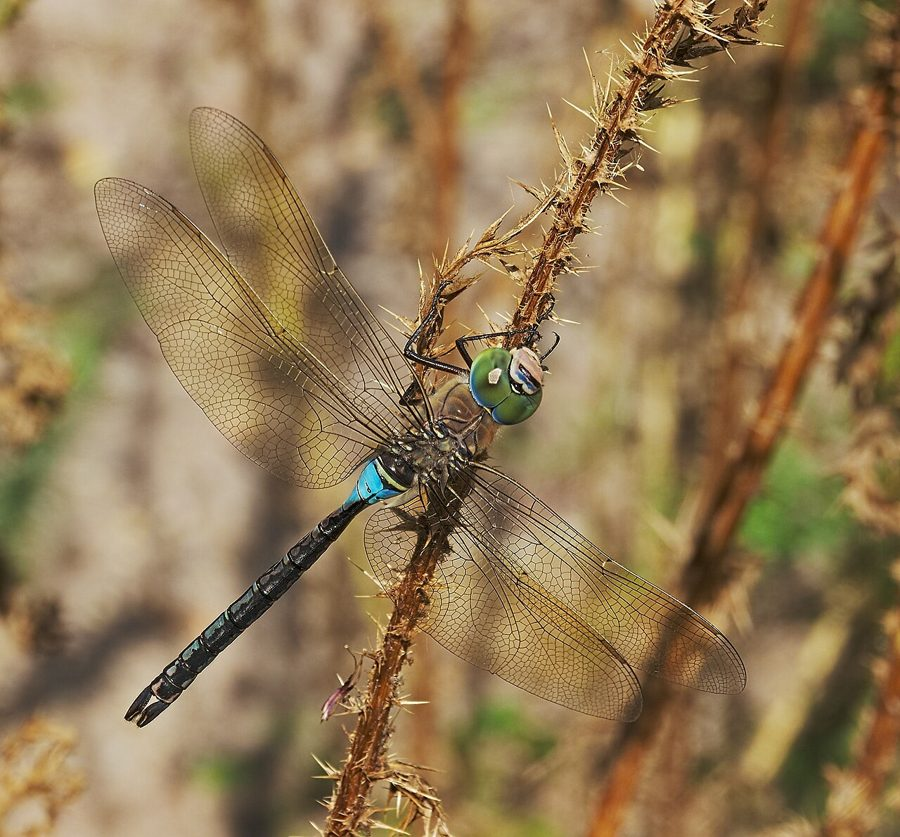

राजा व्याधपतंगLesser Emperor
Anax parthenope · Aeshnidae · INS-0026

- Scientific name
- Anax parthenope (Selys, 1839)
- Family
- Aeshnidae
- Hindi
- राजा व्याधपतंग
- Status here
- native
- IUCN
- LC
When to look कब देखें
Present all year.
राजा व्याधपतंग / Lesser Emperor
Anax parthenope (Selys, 1839) — Aeshnidae
राजा व्याधपतंग (लेसर एम्परर) — पूर्वी उत्तर प्रदेश के बड़े तालाबों, झीलों और नदियों के ऊपर पाया जाने वाला एक विशाल, शक्तिशाली और तेज़ उड़ने वाला प्रवासी ड्रैगनफ्लाई है। यह "हॉकर" (Hawker) परिवार का सदस्य है जो कभी शांति से नहीं बैठता और लगातार पानी के ऊपर गश्त (patrolling) लगाता रहता है। इसका शरीर मुख्य रूप से भूरा-हरा होता है, लेकिन इसके पेट के बिल्कुल शुरुआती हिस्से (segment 2) पर एक चमकीला नीला रंग का घेरा (blue saddle) होता है, जो उड़ते समय दूर से ही चमकता है। इसकी आंखें बहुत बड़ी और हरी-भूरी होती हैं। यह प्रजाति पानी की गुणवत्ता के प्रति संवेदनशील होती है; गाँव के किसी तालाब में इसका होना इस बात का संकेत है कि वहाँ का पानी साफ़ और स्वास्थ्यप्रद है।
Quick Identification त्वरित पहचान
| Feature | Description |
|---|---|
| Size | Large dragonfly; total length 62–72 mm; wingspan 95–105 mm |
| Colouration | Dark brown and olive-green body; segment 2 of the abdomen has a bright blue saddle |
| Eyes | Large, touching compound eyes, greenish-yellow to grey-green |
| Abdomen | Long, robust, dark brown abdomen with small black markings |
| Thorax | Pale green or olive-brown, lacking distinct dark stripes |
| Behaviour | Patrols continuously over open water; rarely lands; flies high |
Field tip: Look over open water on hot days. Identified by its large size, powerful, tireless flight, and the bright sky-blue ring (saddle) near the base of its long brown tail. It flies back and forth along the pond bank, defending its territory.
Morphology आकारिकी
Biometrics (typical measurements for adult specimens in the Gangetic basin):
| Measurement | Range |
|---|---|
| Total body length | 62–72 mm |
| Hindwing length | 42–48 mm |
| Abdomen length | 44–52 mm |
Body details: The head is large, dominated by compound eyes that meet along a long seam. The thorax is olive-brown or pale greenish-brown, without dark bands. The abdomen is long, cylindrical, and robust. Segment 1 is olive-brown; segment 2 is marked with a bright sky-blue saddle that contrasts sharply with the rest of the abdomen. Segments 3 to 10 are dark brown with a black dorsal line. The wings are long, narrow, and transparent, with a yellow-brown tint near the base.
Behaviour & Ecology व्यवहार और पारिस्थितिकी
Continuous patroller and aerial hunter.
- Patrolling flight: Males fly back and forth over a fixed territory of 10–30 meters along a water bank, defending it aggressively. They rarely land during the day, remaining in the air for hours.
- Aerial feeding: Feed entirely on the wing. They capture midges, flies, and smaller dragonflies using their legs (which form a basket shape in flight) and consume them without perching.
- Thermoregulation: During extremely hot summer afternoons, they fly with their abdomen tilted upwards (obelisk posture) to minimize exposure to direct sunlight.
Ecological Role पारिस्थितिक भूमिका
Apex insect predator.
- Population balance: As one of the largest flying insects, they act as apex predators in the insect world, regulating populations of smaller dragonflies, moths, and agricultural pests.
- Water quality bioindicator: Highly sensitive to industrial pollution and pesticide runoff. Their presence and breeding success in a Basti pond suggest at least moderate water quality.
Life Cycle / Phenology जीवन चक्र
- Breeding: Mates in tandem in flight. The pair flies together to lay eggs.
- Egg laying (Endophytic): Unlike skimmers, the female has a sharp ovipositor. The pair lands on submerged weeds, and the female inserts her eggs directly into the living tissue of water plants or submerged rotting wood.
- Larval stage: The aquatic nymphs are large and live in clean weed mats, hunting tadpoles and small fish for 6–12 months.
- Emergence: Crawls up onto a tall reed or post at dawn, emerging as a large adult.
Larval (Naiad) Stage
- Naiad appearance: The naiad is very large (38–45 mm long), slender, and smooth. It is pale green or light brown, matching the submerged weeds. It has very large eyes and a long, flat prementum.
- Habitat: Hides in clean, submerged vegetation mats in permanent lakes and streams.
- Water quality value: Sensitive generalist. They cannot survive in heavily polluted, low-oxygen, or muddy waters. Their presence in pond sediments indicates healthy dissolved oxygen levels and stable, clean aquatic ecosystems.
Host Plants or Prey आहार
Larval prey:
- Large mosquito larvae, tadpoles, small fish fry, and larvae of other aquatic insects.
Adult prey:
- Flying moths, crop pests, small butterflies, and smaller dragonflies (such as the Slender Skimmer [INS-0025 Slender Skimmer]).
Predators / Natural Enemies शत्रु
- Birds: Large insectivorous birds like raptors (Falcons, Hobbies) and occasionally kingfishers capture adults.
- Fish: Large predatory fish like the Great Snakehead [FSH-0009 Great Snakehead] capture females when they land to lay eggs.
- Larval predators: Water beetles and predatory fish prey on the naiads.
Agricultural / Human Relevance कृषि प्रासंगिकता
Beneficial predator.
- Crop pest controller: Hunt major crop pests like moths, grasshoppers, and leafhoppers over sugarcane and rice fields, assisting Basti farmers in natural pest control.
- Public health ally: Directly reduce the populations of mosquitoes and biting flies near wetlands.
Expected Locally स्थानीय रूप से अपेक्षित
Not a field record. Written from published accounts for eastern Uttar Pradesh. No confirmed local sighting yet — if you have seen it, that is what the atlas needs.
अभी तक स्थानीय पुष्टि नहीं। यह विवरण प्रकाशित स्रोतों से है, किसी अवलोकन से नहीं।
Regularly observed flying over the larger perennial wetlands and reservoirs of Basti district, such as the water bodies near the Kuwano river floodplains. They are rarely seen resting; observers must watch them in flight to note the blue saddle.
Distribution वितरण
Global range: Widespread across the Palearctic and Oriental regions, covering Europe, North Africa, the Middle East, the Indian Subcontinent, China, and Japan.
In India: Common resident in the northern plains and hills, showing local migratory movements.
In Uttar Pradesh: Common resident near large, permanent water bodies.
In Basti district / eastern UP: Found in rural blocks containing large lakes and clean perennial ponds.
Research Questions शोध प्रश्न
Anyone can investigate these | कोई भी इन प्रश्नों की जाँच कर सकता है
- What is the correlation between the presence of Lesser Emperor naiads and the dissolved oxygen levels in Basti ponds? — Measure water chemistry and sample naiads across different ponds.
- How do male Lesser Emperors defend their territories against larger bird species compared to other dragonflies? — Record flight maneuvers when birds cross the pond.
- What is the daily flying duration of an adult male during the peak summer month of June? — Track individual patrollers and record time in the air.
- How do females choose nesting plants for laying eggs, and do they prefer native lotus over invasive water hyacinth? / मादा राजा व्याधपतंग अंडे देने के लिए किन पौधों को चुनती है और क्या वे देसी कमल को अधिक पसंद करती हैं? — Map egg-laying sites.
- Does the introduction of predatory fish in village ponds reduce the survival rate of Lesser Emperor naiads? / तालाबों में शिकारी मछलियां डालने से क्या राजा व्याधपतंग के लार्वा के जीवित रहने की दर घटती है? — Compare naiad densities in stocked vs. unstocked ponds.
Similar Species मिलती-जुलती प्रजातियाँ
| Species | Key Difference | हिंदी |
|---|---|---|
| Anax imperator (Blue Emperor) | Larger; male has a completely bright blue abdomen; female is green; thorax is bright green | विशाल नीला व्याधपतंग — चमकीला हरा और नीला |
| Anax guttatus (Pale-spotted Emperor) | Abdomen has orange-yellow spots along the sides; lacks the sky-blue saddle; prefers seasonal pools | चित्तीदार राजा व्याधपतंग — पीले धब्बे |
| [INS-0025 Slender Skimmer] (Orthetrum sabina) | Much smaller; zebra-striped green-black thorax; very slender dumbbell-shaped abdomen; rests frequently | हरी-चित्तीदार व्याधपतंग — छोटी, अक्सर बैठना |
Field rule: Large size, powerful continuous flight over open water, green-brown thorax, and a bright sky-blue saddle on abdominal segment 2 identify the Lesser Emperor.
Taxonomy & Classification वर्गीकरण
Original description. Michel Edmond de Selys Longchamps described the Lesser Emperor as Aeschna parthenope in 1839 in his work published in Annales de la Société Entomologique de France (Vol. 8, p. 389). The type locality was Naples, Italy. The genus name Anax is derived from the Greek anax (king/lord), referring to its large size and dominant flight. The specific name parthenope is named after Parthenope, one of the Sirens in Greek mythology associated with Naples.
Subspecies. Monotypic in India (nominate A. p. parthenope occurs across the range).
Family and order placement. Placed in the order Odonata, suborder Anisoptera, family Aeshnidae (the hawkers or darners).
Phylogenetic notes. Anax parthenope belongs to the genus Anax, which represents a highly evolved branch of fast-flying, large-bodied dragonflies with cosmopolitan distributions.
IUCN status rationale. Listed as Least Concern (LC) globally by the IUCN due to its extremely large range, high flight capability, stable populations, and lack of major threats.
Photo Gallery फोटो गैलरी
References संदर्भ
- Selys Longchamps, M. E. (1839). Description de deux nouvelles espèces d'Aeshna. Annales de la Société Entomologique de France, 8, 389. [original description]
- Subramanian, K. A. (2009). Dragonflies of India: A Field Guide. Vigyan Prasar, Noida.
- Fraser, F. C. (1936). The Fauna of British India, including Ceylon and Burma. Odonata. Vol. 3. Taylor and Francis, London.
- Prasad, M. (1996). Studies on the Odonata fauna of Uttar Pradesh, India. Opuscula Zoologica Fluminensia, 154, 1-29.
- IUCN SSC Odonata Specialist Group (2024). Anax parthenope. IUCN Red List of Threatened Species. Ver. 2024.
- GBIF Occurrence Data — Anax parthenope, Uttar Pradesh (2010–2025).
Source file: species/fauna/insects/lesser_emperor.md